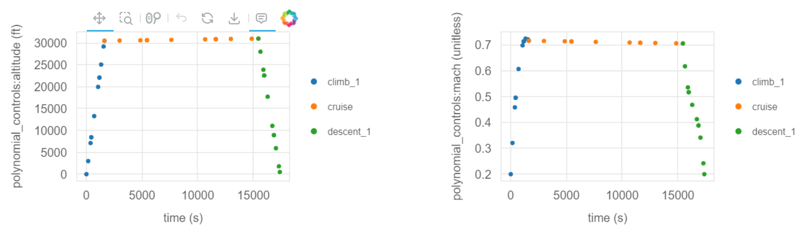

Optimizing the Mission Profile of a Conventional Aircraft#
Building upon our previous example, this notebook introduces more complexity into the Aviary optimization process. Please see the simple mission example if you haven’t already.
Increasing Complexity in Phase Information#
We will now modify the phase_info object from our prior example by increasing num_segments to 3 and setting optimize_mach to True.
This means that we’ll query the aircraft performance at more points along the mission and also give the optimizer the freedom to choose an optimal Mach profile.
Note
We are still using a polynomial_control_order of 1, which means that the optimal Mach profiles for each phase will be linear (straight lines).
Later in this example, we increase this order which will allow the optimizer to choose a more complex Mach profile.
phase_info = {
"pre_mission": {"include_takeoff": False, "optimize_mass": True},
"climb_1": {
"subsystem_options": {"core_aerodynamics": {"method": "computed"}},
"user_options": {
"optimize_mach": True,
"optimize_altitude": False,
"polynomial_control_order": 1,
"num_segments": 3,
"order": 3,
"solve_for_distance": False,
"initial_mach": (0.2, "unitless"),
"final_mach": (0.72, "unitless"),
"mach_bounds": ((0.18, 0.74), "unitless"),
"initial_altitude": (0.0, "ft"),
"final_altitude": (30500.0, "ft"),
"altitude_bounds": ((0.0, 31000.0), "ft"),
"throttle_enforcement": "path_constraint",
"fix_initial": True,
"constrain_final": False,
"fix_duration": False,
"initial_bounds": ((0.0, 0.0), "min"),
"duration_bounds": ((27.0, 81.0), "min"),
},
"initial_guesses": {"times": ([0, 54], "min")},
},
"cruise": {
"subsystem_options": {"core_aerodynamics": {"method": "computed"}},
"user_options": {
"optimize_mach": True,
"optimize_altitude": False,
"polynomial_control_order": 1,
"num_segments": 3,
"order": 3,
"solve_for_distance": False,
"initial_mach": (0.72, "unitless"),
"final_mach": (0.72, "unitless"),
"mach_bounds": ((0.7, 0.74), "unitless"),
"initial_altitude": (30500.0, "ft"),
"final_altitude": (31000.0, "ft"),
"altitude_bounds": ((30000.0, 31500.0), "ft"),
"throttle_enforcement": "boundary_constraint",
"fix_initial": False,
"constrain_final": False,
"fix_duration": False,
"initial_bounds": ((27.0, 81.0), "min"),
"duration_bounds": ((85.5, 256.5), "min"),
},
"initial_guesses": {"times": ([54, 171], "min")},
},
"descent_1": {
"subsystem_options": {"core_aerodynamics": {"method": "computed"}},
"user_options": {
"optimize_mach": True,
"optimize_altitude": False,
"polynomial_control_order": 1,
"num_segments": 3,
"order": 3,
"solve_for_distance": False,
"initial_mach": (0.72, "unitless"),
"final_mach": (0.2, "unitless"),
"mach_bounds": ((0.18, 0.74), "unitless"),
"initial_altitude": (31000.0, "ft"),
"final_altitude": (500.0, "ft"),
"altitude_bounds": ((0.0, 31500.0), "ft"),
"throttle_enforcement": "path_constraint",
"fix_initial": False,
"constrain_final": True,
"fix_duration": False,
"initial_bounds": ((112.5, 337.5), "min"),
"duration_bounds": ((26.5, 79.5), "min"),
},
"initial_guesses": {"times": ([225, 53], "min")},
},
"post_mission": {
"include_landing": False,
"constrain_range": True,
"target_range": (1915, "nmi"),
},
}
Running Aviary with Updated Parameters#
Let’s run the Aviary optimization with our updated phase_info object in the same way as before.
import aviary.api as av
prob = av.run_aviary('models/test_aircraft/aircraft_for_bench_FwFm.csv',
phase_info, optimizer="SLSQP", make_plots=True)
/usr/share/miniconda/envs/test/lib/python3.12/site-packages/pyoptsparse/pyOpt_MPI.py:68: UserWarning: mpi4py could not be imported. mpi4py is required to use the parallel gradient analysis and parallel objective analysis for non-gradient based optimizers. Continuing using a dummy MPI module from pyOptSparse.
warnings.warn(warn)
/home/runner/work/om-Aviary/om-Aviary/aviary/subsystems/propulsion/engine_deck.py:198: UserWarning: <mission:summary:fuel_flow_scaler> is a required option for EngineDecks, but has not been specified for EngineDeck <engine>. The default value will be used.
warnings.warn(
/home/runner/work/om-Aviary/om-Aviary/aviary/subsystems/propulsion/engine_model.py:131: UserWarning: The value of aircraft:engine:wing_locations passed to EngineModel <engine_deck> is type <class 'numpy.ndarray'>. Only the first entry in this iterable will be used.
warnings.warn(
The following variables have been overridden:
'aircraft:design:touchdown_mass
'aircraft:engine:mass
'aircraft:fins:mass
'aircraft:fuel:auxiliary_fuel_capacity
'aircraft:fuel:fuselage_fuel_capacity
'aircraft:fuel:total_capacity
'aircraft:fuselage:planform_area
'aircraft:fuselage:wetted_area
'aircraft:horizontal_tail:wetted_area
'aircraft:landing_gear:main_gear_oleo_length
'aircraft:landing_gear:nose_gear_oleo_length
'aircraft:vertical_tail:wetted_area
'aircraft:wing:aspect_ratio
'aircraft:wing:control_surface_area
'aircraft:wing:wetted_area
--- Constraint Report [traj] ---
--- climb_1 ---
[initial] 2.0000e-01 == mach [unitless]
[path] 0.0000e+00 <= throttle <= 1.0000e+00 [unitless]
--- cruise ---
[initial] 0.0000e+00 <= throttle <= 1.0000e+00 [unitless]
[final] 0.0000e+00 <= throttle <= 1.0000e+00 [unitless]
--- descent_1 ---
[final] 2.0000e-01 == mach [unitless]
[path] 0.0000e+00 <= throttle <= 1.0000e+00 [unitless]
/usr/share/miniconda/envs/test/lib/python3.12/site-packages/openmdao/recorders/sqlite_recorder.py:227: UserWarning:The existing case recorder file, dymos_solution.db, is being overwritten.
Model viewer data has already been recorded for Driver.
Full total jacobian was computed 3 times, taking 0.342702 seconds.
Total jacobian shape: (87, 64)
Jacobian shape: (87, 64) (16.16% nonzero)
FWD solves: 18 REV solves: 0
Total colors vs. total size: 18 vs 64 (71.88% improvement)
Sparsity computed using tolerance: 1e-25
Time to compute sparsity: 0.3427 sec
Time to compute coloring: 0.0392 sec
Memory to compute coloring: 0.0000 MB
Coloring created on: 2024-01-25 20:39:10
Optimization terminated successfully (Exit mode 0)
Current function value: 2.3478953859392293
Iterations: 10
Function evaluations: 10
Gradient evaluations: 10
Optimization Complete
-----------------------------------
Now that we’ve run Aviary, we can look at the results.
Open up the automatically generated traj_results_report.html and scroll through it to visualize the results.
Here are the altitude and Mach profiles:

We note two major changes compared to our first example.
The first is that we have many more points where the flight dynamics were evaluated because we increased num_segments to 3.
This means that we have more points shown on the resulting plots.
The second is that the optimizer chose the optimal Mach profile.
Again, each phase’s Mach profile is constrained to be linear because we set polynomial_control_order to 1.
However, we see that the optimizer chose to decrease the Mach number during the cruise-climb segment to minimize fuel burn.
Note
Remember, we did not allow the optimizer to control the altitude profile, so that remains fixed.
Let’s take a look at the optimization objective, fuel_burned:
print(prob.get_val('fuel_burned', units='kg')[0])
10649.874326202396
Modifying the Aircraft Configuration#
Next, we’ll modify the aircraft configuration by decreasing the wing aspect ratio by 0.2.
This results in a less slender wing, which will increase the induced drag.
We’ve made this change and have a modified aircraft data file called modified_aircraft.csv.
Show code cell source
import csv
filename = 'models/test_aircraft/aircraft_for_bench_FwFm.csv'
filename = av.get_path(filename)
# Read the file
with open(filename, 'r') as file:
reader = csv.reader(file)
lines = list(reader)
# Find the index of the line containing 'aircraft:wing:span'
index = None
for i, line in enumerate(lines):
if 'aircraft:wing:aspect_ratio' in line:
index = i
break
# Modify the value in the line
if index is not None:
aspect_ratio = float(lines[index][1]) - 0.2
lines[index][1] = str(aspect_ratio)
# Write the modified content to a new CSV file
new_filename = 'modified_aircraft.csv'
with open(new_filename, 'w', newline='') as file:
writer = csv.writer(file)
writer.writerows(lines)
Re-running the Optimization with Modified Aircraft#
Now, let’s re-run the optimization with the modified aircraft configuration.
We’ll use the same phase_info object as before, but we’ll change the input deck to point to our new aircraft file.
prob = av.run_aviary('modified_aircraft.csv', phase_info,
optimizer="SLSQP", make_plots=True)
The following variables have been overridden:
'aircraft:design:touchdown_mass
'aircraft:engine:mass
'aircraft:fins:mass
'aircraft:fuel:auxiliary_fuel_capacity
'aircraft:fuel:fuselage_fuel_capacity
'aircraft:fuel:total_capacity
'aircraft:fuselage:planform_area
'aircraft:fuselage:wetted_area
'aircraft:horizontal_tail:wetted_area
'aircraft:landing_gear:main_gear_oleo_length
'aircraft:landing_gear:nose_gear_oleo_length
'aircraft:vertical_tail:wetted_area
'aircraft:wing:aspect_ratio
'aircraft:wing:control_surface_area
'aircraft:wing:wetted_area
/home/runner/work/om-Aviary/om-Aviary/aviary/subsystems/propulsion/engine_model.py:131: UserWarning: The value of aircraft:engine:wing_locations passed to EngineModel <engine_deck> is type <class 'numpy.ndarray'>. Only the first entry in this iterable will be used.
warnings.warn(
--- Constraint Report [traj] ---
--- climb_1 ---
[initial] 2.0000e-01 == mach [unitless]
[path] 0.0000e+00 <= throttle <= 1.0000e+00 [unitless]
--- cruise ---
[initial] 0.0000e+00 <= throttle <= 1.0000e+00 [unitless]
[final] 0.0000e+00 <= throttle <= 1.0000e+00 [unitless]
--- descent_1 ---
[final] 2.0000e-01 == mach [unitless]
[path] 0.0000e+00 <= throttle <= 1.0000e+00 [unitless]
/usr/share/miniconda/envs/test/lib/python3.12/site-packages/openmdao/recorders/sqlite_recorder.py:227: UserWarning:The existing case recorder file, dymos_solution.db, is being overwritten.
Model viewer data has already been recorded for Driver.
Full total jacobian was computed 3 times, taking 0.335896 seconds.
Total jacobian shape: (87, 64)
Jacobian shape: (87, 64) (16.16% nonzero)
FWD solves: 18 REV solves: 0
Total colors vs. total size: 18 vs 64 (71.88% improvement)
Sparsity computed using tolerance: 1e-25
Time to compute sparsity: 0.3359 sec
Time to compute coloring: 0.0386 sec
Memory to compute coloring: 0.0000 MB
Coloring created on: 2024-01-25 20:39:21
Optimization terminated successfully (Exit mode 0)
Current function value: 2.3663530188894977
Iterations: 9
Function evaluations: 10
Gradient evaluations: 9
Optimization Complete
-----------------------------------
The case again converged in relatively few iterations. Let’s take a look at the fuel burn value:
print(prob.get_val('fuel_burned', units='kg')[0])
10733.59674094742
As expected, it’s a bit higher than our prior run that had a larger aspect ratio.
Increasing the Polynomial Control Order#
Next, we’ll increase the polynomial_control_order to 3 for the climb and descent phases.
This means that the optimizer will be able to choose a cubic Mach profile per phase instead of a line.
We’ll use the original aircraft configuration for this run.
Note
We’ll use the IPOPT optimizer for this problem as it will handle the increased complexity better than SLSQP.
phase_info['climb_1']['user_options']['polynomial_control_order'] = 3
phase_info['cruise']['user_options']['polynomial_control_order'] = 1
phase_info['descent_1']['user_options']['polynomial_control_order'] = 3
prob = av.run_aviary('models/test_aircraft/aircraft_for_bench_FwFm.csv',
phase_info, optimizer="IPOPT", make_plots=True)
The following variables have been overridden:
'aircraft:design:touchdown_mass
'aircraft:engine:mass
'aircraft:fins:mass
'aircraft:fuel:auxiliary_fuel_capacity
'aircraft:fuel:fuselage_fuel_capacity
'aircraft:fuel:total_capacity
'aircraft:fuselage:planform_area
'aircraft:fuselage:wetted_area
'aircraft:horizontal_tail:wetted_area
'aircraft:landing_gear:main_gear_oleo_length
'aircraft:landing_gear:nose_gear_oleo_length
'aircraft:vertical_tail:wetted_area
'aircraft:wing:aspect_ratio
'aircraft:wing:control_surface_area
'aircraft:wing:wetted_area
/home/runner/work/om-Aviary/om-Aviary/aviary/subsystems/propulsion/engine_model.py:131: UserWarning: The value of aircraft:engine:wing_locations passed to EngineModel <engine_deck> is type <class 'numpy.ndarray'>. Only the first entry in this iterable will be used.
warnings.warn(
--- Constraint Report [traj] ---
--- climb_1 ---
[initial] 2.0000e-01 == mach [unitless]
[path] 0.0000e+00 <= throttle <= 1.0000e+00 [unitless]
--- cruise ---
[initial] 0.0000e+00 <= throttle <= 1.0000e+00 [unitless]
[final] 0.0000e+00 <= throttle <= 1.0000e+00 [unitless]
--- descent_1 ---
[final] 2.0000e-01 == mach [unitless]
[path] 0.0000e+00 <= throttle <= 1.0000e+00 [unitless]
/usr/share/miniconda/envs/test/lib/python3.12/site-packages/openmdao/recorders/sqlite_recorder.py:227: UserWarning:The existing case recorder file, dymos_solution.db, is being overwritten.
Model viewer data has already been recorded for Driver.
Model viewer data has already been recorded for Driver.
Full total jacobian was computed 3 times, taking 0.347844 seconds.
Total jacobian shape: (87, 68)
Jacobian shape: (87, 68) (18.51% nonzero)
FWD solves: 19 REV solves: 0
Total colors vs. total size: 19 vs 68 (72.06% improvement)
Sparsity computed using tolerance: 1e-25
Time to compute sparsity: 0.3478 sec
Time to compute coloring: 0.0429 sec
Memory to compute coloring: 0.0000 MB
Coloring created on: 2024-01-25 20:39:32
List of user-set options:
Name Value used
alpha_for_y = safer-min-dual-infeas yes
file_print_level = 5 yes
hessian_approximation = limited-memory yes
linear_solver = mumps yes
max_iter = 50 yes
mu_init = 1e-05 yes
mu_strategy = monotone yes
nlp_scaling_method = gradient-based yes
output_file = reports/problem3/IPOPT.out yes
print_level = 5 yes
print_user_options = yes yes
sb = yes yes
tol = 1e-06 yes
This is Ipopt version 3.14.14, running with linear solver MUMPS 5.6.2.
Number of nonzeros in equality constraint Jacobian...: 592
Number of nonzeros in inequality constraint Jacobian.: 346
Number of nonzeros in Lagrangian Hessian.............: 0
Total number of variables............................: 68
variables with only lower bounds: 0
variables with lower and upper bounds: 68
variables with only upper bounds: 0
Total number of equality constraints.................: 60
Total number of inequality constraints...............: 26
inequality constraints with only lower bounds: 0
inequality constraints with lower and upper bounds: 26
inequality constraints with only upper bounds: 0
iter objective inf_pr inf_du lg(mu) ||d|| lg(rg) alpha_du alpha_pr ls
0 0.0000000e+00 1.91e+01 1.16e-01 -5.0 0.00e+00 - 0.00e+00 0.00e+00 0
1 3.5202626e-02 1.86e+01 1.04e+00 -5.0 6.42e+00 - 2.82e-03 2.41e-02h 1
2 2.6763572e-01 1.67e+01 1.06e+00 -5.0 4.58e+00 - 2.26e-02 1.05e-01h 1
3 3.3122319e-01 1.64e+01 1.10e+00 -5.0 5.59e+00 - 1.98e-02 1.89e-02h 1
4 4.7490459e-01 1.57e+01 1.11e+00 -5.0 5.20e+00 - 6.93e-03 3.97e-02h 1
5 4.9776727e-01 1.55e+01 1.11e+00 -5.0 2.91e+00 - 2.27e-03 1.08e-02h 1
6 5.7982303e-01 1.49e+01 1.10e+00 -5.0 2.88e+00 - 1.18e-02 4.29e-02h 1
7 8.6480827e-01 1.27e+01 1.06e+00 -5.0 2.76e+00 - 3.78e-02 1.46e-01h 1
8 9.0160706e-01 1.24e+01 1.03e+00 -5.0 2.36e+00 - 2.29e-02 2.26e-02h 1
9 1.1791710e+00 1.04e+01 1.01e+00 -5.0 2.30e+00 - 2.33e-02 1.65e-01h 1
iter objective inf_pr inf_du lg(mu) ||d|| lg(rg) alpha_du alpha_pr ls
10 1.4419290e+00 8.63e+00 9.67e-01 -5.0 1.92e+00 - 4.15e-02 1.68e-01h 1
11 2.6785691e+00 3.62e-05 1.92e+00 -5.0 1.60e+00 - 1.96e-02 1.00e+00h 1
12 2.6776239e+00 2.00e-06 3.96e-01 -5.0 1.73e-02 - 7.67e-01 1.00e+00h 1
13 2.6207585e+00 2.64e-05 1.94e-01 -5.0 7.28e-02 - 4.55e-01 1.00e+00h 1
14 2.4804347e+00 1.02e-04 1.39e-01 -5.0 1.89e-01 - 3.99e-01 1.00e+00h 1
15 2.3839561e+00 7.60e-05 8.98e-02 -5.0 2.33e-01 - 5.39e-01 1.00e+00h 1
16 2.3532694e+00 3.19e-05 1.06e-01 -5.0 1.88e-01 - 2.63e-01 1.00e+00h 1
17 2.3681258e+00 5.50e-06 1.11e-01 -5.0 6.70e-02 - 2.85e-01 1.00e+00h 1
18 2.3420452e+00 9.19e-06 7.52e-02 -5.0 1.65e-01 - 5.01e-01 1.00e+00h 1
19 2.3039175e+00 4.35e-03 1.09e-01 -5.0 8.72e-01 - 1.60e-01 4.89e-01h 1
iter objective inf_pr inf_du lg(mu) ||d|| lg(rg) alpha_du alpha_pr ls
20 2.2836930e+00 3.66e-03 7.28e-02 -5.0 1.43e+00 - 1.47e-01 1.62e-01h 1
21 2.2856159e+00 2.83e-02 4.81e-02 -5.0 1.72e-01 - 1.68e-01 5.80e-01h 1
22 2.2875951e+00 1.09e-02 4.43e-02 -5.0 1.15e-01 - 5.57e-01 6.04e-01h 1
23 2.2893958e+00 7.13e-03 1.25e-02 -5.0 7.60e-02 - 6.07e-01 4.71e-01h 1
24 2.2928363e+00 1.13e-04 8.88e-03 -5.0 2.53e-02 - 9.81e-01 1.00e+00h 1
25 2.2929696e+00 1.48e-07 9.40e-03 -5.0 3.06e-02 - 1.00e+00 1.00e+00h 1
26 2.2923460e+00 8.12e-07 9.20e-03 -5.0 4.28e-02 - 1.00e+00 1.00e+00h 1
27 2.2926392e+00 2.22e-07 4.06e-03 -5.0 1.63e-02 - 1.00e+00 1.00e+00h 1
28 2.2927158e+00 4.38e-08 1.97e-03 -5.0 3.40e-03 - 1.00e+00 1.00e+00h 1
29 2.2926882e+00 1.29e-08 2.33e-04 -5.0 4.84e-04 - 1.00e+00 1.00e+00h 1
iter objective inf_pr inf_du lg(mu) ||d|| lg(rg) alpha_du alpha_pr ls
30 2.2927001e+00 3.30e-09 5.02e-05 -5.0 2.40e-04 - 1.00e+00 1.00e+00h 1
31 2.2926625e+00 5.46e-07 3.59e-04 -7.0 1.08e-03 - 9.97e-01 9.85e-01h 1
32 2.2926641e+00 7.88e-07 2.43e-04 -7.0 3.07e-04 - 1.00e+00 1.00e+00h 1
33 2.2926681e+00 2.48e-09 1.54e-05 -7.0 1.13e-04 - 1.00e+00 1.00e+00h 1
34 2.2926659e+00 1.62e-10 8.04e-07 -7.0 7.47e-06 - 1.00e+00 1.00e+00h 1
Number of Iterations....: 34
(scaled) (unscaled)
Objective...............: 2.2926659102265838e+00 2.2926659102265838e+00
Dual infeasibility......: 8.0442807895513444e-07 8.0442807895513444e-07
Constraint violation....: 1.6244828181452566e-10 1.6244828181452566e-10
Variable bound violation: 0.0000000000000000e+00 0.0000000000000000e+00
Complementarity.........: 9.0909090911457975e-08 9.0909090911457975e-08
Overall NLP error.......: 8.0442807895513444e-07 8.0442807895513444e-07
Number of objective function evaluations = 35
Number of objective gradient evaluations = 35
Number of equality constraint evaluations = 35
Number of inequality constraint evaluations = 35
Number of equality constraint Jacobian evaluations = 35
Number of inequality constraint Jacobian evaluations = 35
Number of Lagrangian Hessian evaluations = 0
Total seconds in IPOPT = 13.528
EXIT: Optimal Solution Found.
Optimization Problem -- Optimization using pyOpt_sparse
================================================================================
Objective Function: _objfunc
Solution:
--------------------------------------------------------------------------------
Total Time: 13.5297
User Objective Time : 9.6679
User Sensitivity Time : 3.7123
Interface Time : 0.0715
Opt Solver Time: 0.0780
Calls to Objective Function : 36
Calls to Sens Function : 36
Objectives
Index Name Value
0 fuel_burned 2.292666E+00
Variables (c - continuous, i - integer, d - discrete)
Index Name Type Lower Bound Value Upper Bound Status
0 mission:design:gross_mass_0 c 7.407407E-01 1.186862E+00 1.481481E+00
1 traj.climb_1.t_duration_0 c 5.000000E-01 5.000015E-01 1.500000E+00
2 traj.climb_1.states:mass_0 c 0.000000E+00 7.931662E+00 1.000000E+17
3 traj.climb_1.states:mass_1 c 0.000000E+00 7.907364E+00 1.000000E+17
4 traj.climb_1.states:mass_2 c 0.000000E+00 7.898871E+00 1.000000E+17
5 traj.climb_1.states:mass_3 c 0.000000E+00 7.868957E+00 1.000000E+17
6 traj.climb_1.states:mass_4 c 0.000000E+00 7.828223E+00 1.000000E+17
7 traj.climb_1.states:mass_5 c 0.000000E+00 7.815965E+00 1.000000E+17
8 traj.climb_1.states:mass_6 c 0.000000E+00 7.799516E+00 1.000000E+17
9 traj.climb_1.states:mass_7 c 0.000000E+00 7.778635E+00 1.000000E+17
10 traj.climb_1.states:mass_8 c 0.000000E+00 7.772448E+00 1.000000E+17
11 traj.climb_1.states:distance_0 c 0.000000E+00 1.405035E-02 1.000000E+15
12 traj.climb_1.states:distance_1 c 0.000000E+00 4.278302E-02 1.000000E+15
13 traj.climb_1.states:distance_2 c 0.000000E+00 5.373912E-02 1.000000E+15
14 traj.climb_1.states:distance_3 c 0.000000E+00 1.003647E-01 1.000000E+15
15 traj.climb_1.states:distance_4 c 0.000000E+00 1.751719E-01 1.000000E+15
16 traj.climb_1.states:distance_5 c 0.000000E+00 2.000974E-01 1.000000E+15
17 traj.climb_1.states:distance_6 c 0.000000E+00 2.357259E-01 1.000000E+15
18 traj.climb_1.states:distance_7 c 0.000000E+00 2.844957E-01 1.000000E+15
19 traj.climb_1.states:distance_8 c 0.000000E+00 2.996271E-01 1.000000E+15
20 traj.climb_1.polynomial_controls:mach_0 c 3.600000E-01 4.000000E-01 1.480000E+00
21 traj.climb_1.polynomial_controls:mach_1 c 3.600000E-01 9.910219E-01 1.480000E+00
22 traj.climb_1.polynomial_controls:mach_2 c 3.600000E-01 1.426426E+00 1.480000E+00
23 traj.climb_1.polynomial_controls:mach_3 c 3.600000E-01 1.432334E+00 1.480000E+00
24 traj.cruise.t_duration_0 c 5.000000E-01 1.347063E+00 1.500000E+00
25 traj.cruise.states:mass_0 c 0.000000E+00 7.688642E+00 1.000000E+17
26 traj.cruise.states:mass_1 c 0.000000E+00 7.574349E+00 1.000000E+17
27 traj.cruise.states:mass_2 c 0.000000E+00 7.538496E+00 1.000000E+17
28 traj.cruise.states:mass_3 c 0.000000E+00 7.406978E+00 1.000000E+17
29 traj.cruise.states:mass_4 c 0.000000E+00 7.228865E+00 1.000000E+17
30 traj.cruise.states:mass_5 c 0.000000E+00 7.173287E+00 1.000000E+17
31 traj.cruise.states:mass_6 c 0.000000E+00 7.095273E+00 1.000000E+17
32 traj.cruise.states:mass_7 c 0.000000E+00 6.988846E+00 1.000000E+17
33 traj.cruise.states:mass_8 c 0.000000E+00 6.955453E+00 1.000000E+17
34 traj.cruise.states:distance_0 c 0.000000E+00 5.932179E-01 1.000000E+15
35 traj.cruise.states:distance_1 c 0.000000E+00 9.975026E-01 1.000000E+15
36 traj.cruise.states:distance_2 c 0.000000E+00 1.125262E+00 1.000000E+15
37 traj.cruise.states:distance_3 c 0.000000E+00 1.597805E+00 1.000000E+15
38 traj.cruise.states:distance_4 c 0.000000E+00 2.247700E+00 1.000000E+15
39 traj.cruise.states:distance_5 c 0.000000E+00 2.452877E+00 1.000000E+15
40 traj.cruise.states:distance_6 c 0.000000E+00 2.742831E+00 1.000000E+15
41 traj.cruise.states:distance_7 c 0.000000E+00 3.142100E+00 1.000000E+15
42 traj.cruise.states:distance_8 c 0.000000E+00 3.268272E+00 1.000000E+15
43 traj.cruise.polynomial_controls:mach_0 c 1.400000E+00 1.432334E+00 1.480000E+00
44 traj.cruise.polynomial_controls:mach_1 c 1.400000E+00 1.410915E+00 1.480000E+00
45 traj.descent_1.t_duration_0 c 5.000000E-01 6.074531E-01 1.500000E+00
46 traj.descent_1.states:mass_0 c 0.000000E+00 6.951343E+00 1.000000E+17
47 traj.descent_1.states:mass_1 c 0.000000E+00 6.945746E+00 1.000000E+17
48 traj.descent_1.states:mass_2 c 0.000000E+00 6.943952E+00 1.000000E+17
49 traj.descent_1.states:mass_3 c 0.000000E+00 6.937152E+00 1.000000E+17
50 traj.descent_1.states:mass_4 c 0.000000E+00 6.928181E+00 1.000000E+17
51 traj.descent_1.states:mass_5 c 0.000000E+00 6.925670E+00 1.000000E+17
52 traj.descent_1.states:mass_6 c 0.000000E+00 6.922376E+00 1.000000E+17
53 traj.descent_1.states:mass_7 c 0.000000E+00 6.917747E+00 1.000000E+17
54 traj.descent_1.states:mass_8 c 0.000000E+00 6.916074E+00 1.000000E+17
55 traj.descent_1.states:distance_0 c 0.000000E+00 3.306224E+00 1.000000E+15
56 traj.descent_1.states:distance_1 c 0.000000E+00 3.352396E+00 1.000000E+15
57 traj.descent_1.states:distance_2 c 0.000000E+00 3.365999E+00 1.000000E+15
58 traj.descent_1.states:distance_3 c 0.000000E+00 3.413639E+00 1.000000E+15
59 traj.descent_1.states:distance_4 c 0.000000E+00 3.473653E+00 1.000000E+15
60 traj.descent_1.states:distance_5 c 0.000000E+00 3.491466E+00 1.000000E+15
61 traj.descent_1.states:distance_6 c 0.000000E+00 3.514485E+00 1.000000E+15
62 traj.descent_1.states:distance_7 c 0.000000E+00 3.540347E+00 1.000000E+15
63 traj.descent_1.states:distance_8 c 0.000000E+00 3.546580E+00 1.000000E+15
64 traj.descent_1.polynomial_controls:mach_0 c 3.600000E-01 1.410915E+00 1.480000E+00
65 traj.descent_1.polynomial_controls:mach_1 c 3.600000E-01 1.034415E+00 1.480000E+00
66 traj.descent_1.polynomial_controls:mach_2 c 3.600000E-01 7.767544E-01 1.480000E+00
67 traj.descent_1.polynomial_controls:mach_3 c 3.600000E-01 4.000000E-01 1.480000E+00
Constraints (i - inequality, e - equality)
Index Name Type Lower Value Upper Status Lagrange Multiplier (N/A)
0 mission:constraints:range_residual e 0.000000E+00 -2.273737E-15 0.000000E+00 9.00000E+100
1 mission:constraints:mass_residual e 0.000000E+00 0.000000E+00 0.000000E+00 9.00000E+100
2 traj.linkages.climb_1:mach_final|cruise:mach_initial e 0.000000E+00 0.000000E+00 0.000000E+00 9.00000E+100
3 traj.linkages.cruise:mach_final|descent_1:mach_initial e 0.000000E+00 0.000000E+00 0.000000E+00 9.00000E+100
4 traj.phases.climb_1->initial_boundary_constraint->mach e 2.000000E-01 2.000000E-01 2.000000E-01 9.00000E+100
5 traj.climb_1.collocation_constraint.defects:mass e 0.000000E+00 5.741639E-17 0.000000E+00 9.00000E+100
6 traj.climb_1.collocation_constraint.defects:mass e 0.000000E+00 -4.635853E-13 0.000000E+00 9.00000E+100
7 traj.climb_1.collocation_constraint.defects:mass e 0.000000E+00 -1.660804E-12 0.000000E+00 9.00000E+100
8 traj.climb_1.collocation_constraint.defects:mass e 0.000000E+00 -3.033379E-12 0.000000E+00 9.00000E+100
9 traj.climb_1.collocation_constraint.defects:mass e 0.000000E+00 -1.171314E-12 0.000000E+00 9.00000E+100
10 traj.climb_1.collocation_constraint.defects:mass e 0.000000E+00 8.243869E-12 0.000000E+00 9.00000E+100
11 traj.climb_1.collocation_constraint.defects:mass e 0.000000E+00 6.729605E-12 0.000000E+00 9.00000E+100
12 traj.climb_1.collocation_constraint.defects:mass e 0.000000E+00 7.991010E-12 0.000000E+00 9.00000E+100
13 traj.climb_1.collocation_constraint.defects:mass e 0.000000E+00 7.903835E-12 0.000000E+00 9.00000E+100
14 traj.climb_1.collocation_constraint.defects:distance e 0.000000E+00 -3.181514E-20 0.000000E+00 9.00000E+100
15 traj.climb_1.collocation_constraint.defects:distance e 0.000000E+00 5.726725E-19 0.000000E+00 9.00000E+100
16 traj.climb_1.collocation_constraint.defects:distance e 0.000000E+00 3.817817E-19 0.000000E+00 9.00000E+100
17 traj.climb_1.collocation_constraint.defects:distance e 0.000000E+00 1.338427E-18 0.000000E+00 9.00000E+100
18 traj.climb_1.collocation_constraint.defects:distance e 0.000000E+00 5.147798E-19 0.000000E+00 9.00000E+100
19 traj.climb_1.collocation_constraint.defects:distance e 0.000000E+00 2.059119E-19 0.000000E+00 9.00000E+100
20 traj.climb_1.collocation_constraint.defects:distance e 0.000000E+00 -1.018084E-18 0.000000E+00 9.00000E+100
21 traj.climb_1.collocation_constraint.defects:distance e 0.000000E+00 7.635634E-19 0.000000E+00 9.00000E+100
22 traj.climb_1.collocation_constraint.defects:distance e 0.000000E+00 -1.336236E-18 0.000000E+00 9.00000E+100
23 traj.cruise.collocation_constraint.defects:mass e 0.000000E+00 5.432901E-11 0.000000E+00 9.00000E+100
24 traj.cruise.collocation_constraint.defects:mass e 0.000000E+00 3.069873E-11 0.000000E+00 9.00000E+100
25 traj.cruise.collocation_constraint.defects:mass e 0.000000E+00 -1.368349E-12 0.000000E+00 9.00000E+100
26 traj.cruise.collocation_constraint.defects:mass e 0.000000E+00 -1.842703E-11 0.000000E+00 9.00000E+100
27 traj.cruise.collocation_constraint.defects:mass e 0.000000E+00 -7.763269E-11 0.000000E+00 9.00000E+100
28 traj.cruise.collocation_constraint.defects:mass e 0.000000E+00 -1.571122E-10 0.000000E+00 9.00000E+100
29 traj.cruise.collocation_constraint.defects:mass e 0.000000E+00 -1.123214E-10 0.000000E+00 9.00000E+100
30 traj.cruise.collocation_constraint.defects:mass e 0.000000E+00 -1.335972E-10 0.000000E+00 9.00000E+100
31 traj.cruise.collocation_constraint.defects:mass e 0.000000E+00 -1.624483E-10 0.000000E+00 9.00000E+100
32 traj.cruise.collocation_constraint.defects:distance e 0.000000E+00 -1.444154E-14 0.000000E+00 9.00000E+100
33 traj.cruise.collocation_constraint.defects:distance e 0.000000E+00 -8.218806E-15 0.000000E+00 9.00000E+100
34 traj.cruise.collocation_constraint.defects:distance e 0.000000E+00 3.713120E-16 0.000000E+00 9.00000E+100
35 traj.cruise.collocation_constraint.defects:distance e 0.000000E+00 4.994331E-15 0.000000E+00 9.00000E+100
36 traj.cruise.collocation_constraint.defects:distance e 0.000000E+00 2.128520E-14 0.000000E+00 9.00000E+100
37 traj.cruise.collocation_constraint.defects:distance e 0.000000E+00 4.372455E-14 0.000000E+00 9.00000E+100
38 traj.cruise.collocation_constraint.defects:distance e 0.000000E+00 3.143775E-14 0.000000E+00 9.00000E+100
39 traj.cruise.collocation_constraint.defects:distance e 0.000000E+00 3.762736E-14 0.000000E+00 9.00000E+100
40 traj.cruise.collocation_constraint.defects:distance e 0.000000E+00 4.618165E-14 0.000000E+00 9.00000E+100
41 traj.phases.descent_1->final_boundary_constraint->mach e 2.000000E-01 2.000000E-01 2.000000E-01 9.00000E+100
42 traj.descent_1.collocation_constraint.defects:mass e 0.000000E+00 -2.135624E-11 0.000000E+00 9.00000E+100
43 traj.descent_1.collocation_constraint.defects:mass e 0.000000E+00 -1.546677E-11 0.000000E+00 9.00000E+100
44 traj.descent_1.collocation_constraint.defects:mass e 0.000000E+00 -1.063715E-11 0.000000E+00 9.00000E+100
45 traj.descent_1.collocation_constraint.defects:mass e 0.000000E+00 -1.569073E-11 0.000000E+00 9.00000E+100
46 traj.descent_1.collocation_constraint.defects:mass e 0.000000E+00 -1.116933E-11 0.000000E+00 9.00000E+100
47 traj.descent_1.collocation_constraint.defects:mass e 0.000000E+00 -3.811473E-12 0.000000E+00 9.00000E+100
48 traj.descent_1.collocation_constraint.defects:mass e 0.000000E+00 -1.339982E-12 0.000000E+00 9.00000E+100
49 traj.descent_1.collocation_constraint.defects:mass e 0.000000E+00 -4.110486E-13 0.000000E+00 9.00000E+100
50 traj.descent_1.collocation_constraint.defects:mass e 0.000000E+00 -1.402219E-14 0.000000E+00 9.00000E+100
51 traj.descent_1.collocation_constraint.defects:distance e 0.000000E+00 -1.913746E-15 0.000000E+00 9.00000E+100
52 traj.descent_1.collocation_constraint.defects:distance e 0.000000E+00 -1.896978E-15 0.000000E+00 9.00000E+100
53 traj.descent_1.collocation_constraint.defects:distance e 0.000000E+00 -1.725277E-15 0.000000E+00 9.00000E+100
54 traj.descent_1.collocation_constraint.defects:distance e 0.000000E+00 -2.679472E-15 0.000000E+00 9.00000E+100
55 traj.descent_1.collocation_constraint.defects:distance e 0.000000E+00 -2.068716E-15 0.000000E+00 9.00000E+100
56 traj.descent_1.collocation_constraint.defects:distance e 0.000000E+00 -1.087331E-15 0.000000E+00 9.00000E+100
57 traj.descent_1.collocation_constraint.defects:distance e 0.000000E+00 -5.226893E-16 0.000000E+00 9.00000E+100
58 traj.descent_1.collocation_constraint.defects:distance e 0.000000E+00 -2.617620E-16 0.000000E+00 9.00000E+100
59 traj.descent_1.collocation_constraint.defects:distance e 0.000000E+00 -3.812620E-17 0.000000E+00 9.00000E+100
60 traj.phases.climb_1->path_constraint->throttle i 0.000000E+00 7.854497E-01 1.000000E+00 9.00000E+100
61 traj.phases.climb_1->path_constraint->throttle i 0.000000E+00 5.622694E-01 1.000000E+00 9.00000E+100
62 traj.phases.climb_1->path_constraint->throttle i 0.000000E+00 5.627682E-01 1.000000E+00 9.00000E+100
63 traj.phases.climb_1->path_constraint->throttle i 0.000000E+00 5.833633E-01 1.000000E+00 9.00000E+100
64 traj.phases.climb_1->path_constraint->throttle i 0.000000E+00 5.833633E-01 1.000000E+00 9.00000E+100
65 traj.phases.climb_1->path_constraint->throttle i 0.000000E+00 6.648405E-01 1.000000E+00 9.00000E+100
66 traj.phases.climb_1->path_constraint->throttle i 0.000000E+00 7.773329E-01 1.000000E+00 9.00000E+100
67 traj.phases.climb_1->path_constraint->throttle i 0.000000E+00 8.101375E-01 1.000000E+00 9.00000E+100
68 traj.phases.climb_1->path_constraint->throttle i 0.000000E+00 8.101375E-01 1.000000E+00 9.00000E+100
69 traj.phases.climb_1->path_constraint->throttle i 0.000000E+00 8.668204E-01 1.000000E+00 9.00000E+100
70 traj.phases.climb_1->path_constraint->throttle i 0.000000E+00 9.565312E-01 1.000000E+00 9.00000E+100
71 traj.phases.climb_1->path_constraint->throttle i 0.000000E+00 9.999985E-01 1.000000E+00 9.00000E+100
72 traj.phases.cruise->initial_boundary_constraint->throttle i 0.000000E+00 7.062894E-01 1.000000E+00 9.00000E+100
73 traj.phases.cruise->final_boundary_constraint->throttle i 0.000000E+00 6.599819E-01 1.000000E+00 9.00000E+100
74 traj.phases.descent_1->path_constraint->throttle i 0.000000E+00 2.104671E-01 1.000000E+00 9.00000E+100
75 traj.phases.descent_1->path_constraint->throttle i 0.000000E+00 1.919425E-01 1.000000E+00 9.00000E+100
76 traj.phases.descent_1->path_constraint->throttle i 0.000000E+00 1.725424E-01 1.000000E+00 9.00000E+100
77 traj.phases.descent_1->path_constraint->throttle i 0.000000E+00 1.666167E-01 1.000000E+00 9.00000E+100
78 traj.phases.descent_1->path_constraint->throttle i 0.000000E+00 1.666167E-01 1.000000E+00 9.00000E+100
79 traj.phases.descent_1->path_constraint->throttle i 0.000000E+00 1.402172E-01 1.000000E+00 9.00000E+100
80 traj.phases.descent_1->path_constraint->throttle i 0.000000E+00 8.864763E-02 1.000000E+00 9.00000E+100
81 traj.phases.descent_1->path_constraint->throttle i 0.000000E+00 5.254323E-02 1.000000E+00 9.00000E+100
82 traj.phases.descent_1->path_constraint->throttle i 0.000000E+00 5.254323E-02 1.000000E+00 9.00000E+100
83 traj.phases.descent_1->path_constraint->throttle i 0.000000E+00 1.751183E-06 1.000000E+00 9.00000E+100
84 traj.phases.descent_1->path_constraint->throttle i 0.000000E+00 4.633963E-06 1.000000E+00 9.00000E+100
85 traj.phases.descent_1->path_constraint->throttle i 0.000000E+00 8.458004E-02 1.000000E+00 9.00000E+100
--------------------------------------------------------------------------------
And let’s print out the objective value, fuel burned:
print(prob.get_val('fuel_burned', units='kg')[0])
10399.357638378835
The added flexibility in the mission allowed the optimizer to reduce the fuel burn compared to the linear Mach profile case.
Looking at the altitude and Mach profiles, we see that the optimizer chose a more subtly complex Mach profile:

Conclusion#
This example demonstrated how to use Aviary to optimize a more complex mission. We increased the number of segments in the mission, allowed the optimizer to choose the optimal Mach profile, and increased the polynomial control order to allow for more complex Mach profiles. We also modified the aircraft configuration to demonstrate how Aviary can be used to quickly evaluate the impact of design changes on the mission performance.